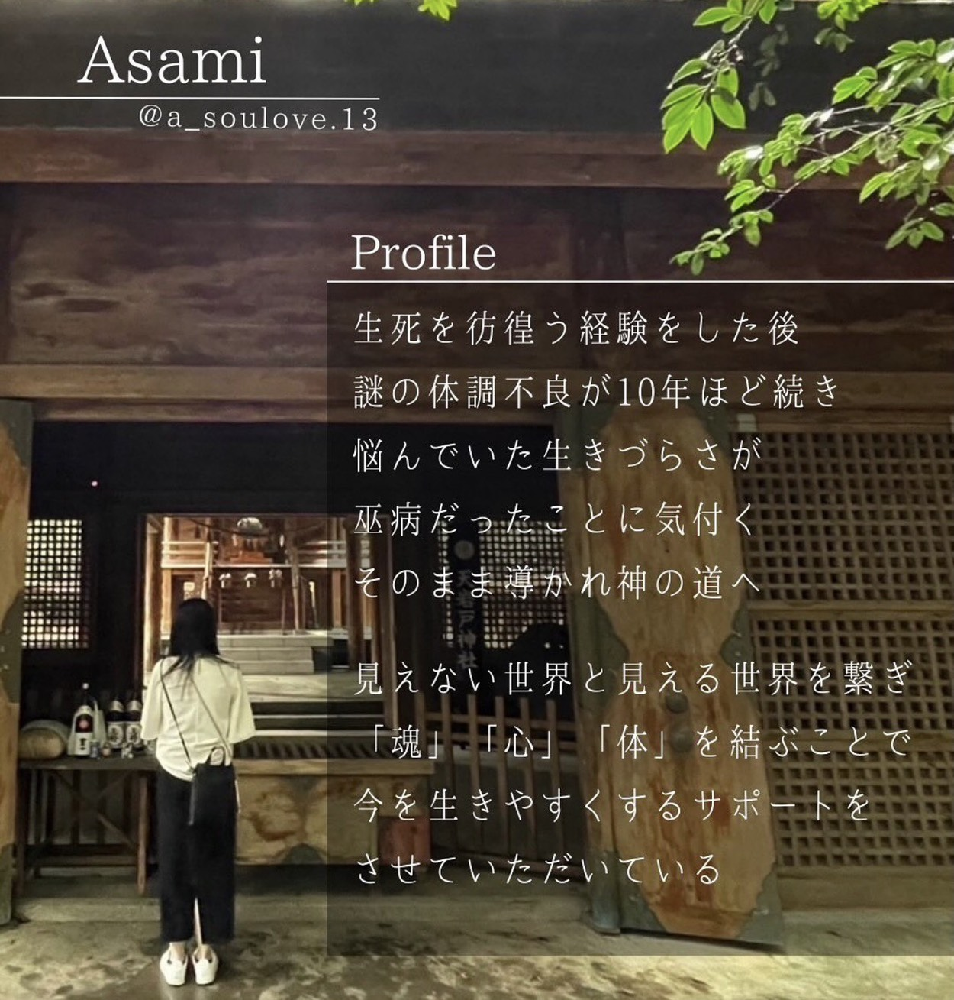

01 — THE BEGINNING
旅のはじまりは、
小さな心の動きから。
神々が降り立ったと伝えられる
宮崎・高千穂。
ここには、日本神話にまつわる場所や
古くから大切に守られてきた神社が
数多くあります。
でも今回の旅は、決められた神社を順番に巡るだけの「観光ツアー」ではありません。
神話を知り、その土地にまつわる物語を感じながら、参加する一人ひとりのご縁を見て、その日に巡る場所を決めていく旅。
2027年2月20日。
8名だけで、高千穂を巡ります。
MIYAZAKI · TAKACHIHO
神話のはじまりの地・高千穂へ。
決められた神社を巡る旅ではありません。
集まった8人のご縁から生まれる、
一度きりの高千穂・神話巡り。
01 — THE BEGINNING
神々が降り立ったと伝えられる
宮崎・高千穂。
ここには、日本神話にまつわる場所や
古くから大切に守られてきた神社が
数多くあります。
でも今回の旅は、決められた神社を順番に巡るだけの「観光ツアー」ではありません。
神話を知り、その土地にまつわる物語を感じながら、参加する一人ひとりのご縁を見て、その日に巡る場所を決めていく旅。
2027年2月20日。
8名だけで、高千穂を巡ります。
02 — YOUR OWN JOURNEY
高千穂には、たくさんの神社や神話の舞台があります。
だからこそ、「有名だから行く」「観光スポットだから行く」だけではなく、“今のあなたに必要な場所”を巡ってほしい。
参加者が決まってから、その方のエネルギーやご縁、ゆかりなどを見ながら、今回巡る神社を選んでいきます。
どこへ行くかは、参加するメンバーによって変わります。同じ内容では二度と開催できない旅です。
03 — MEET THE MYTHS
ただ神社を訪れるのではなく、そこに伝わる神話や神々の物語を知ってから、その場所に立つ。
なぜ、この場所なのか。
どんな神様が祀られているのか。
この神話は何を伝えているのか。
物語を知ることで、今までとは違う高千穂が見えてくるかもしれません。

04 — YOUR MYTH GUIDE
神話ガイド
生死を彷徨う経験をした後、約10年間、原因のわからない体調不良に悩む。
その生きづらさが「巫病だった」と気づいたことをきっかけに、導かれるように神の道へ。
現在は、見えない世界と見える世界を繋ぎ、「魂」「心」「体」を結ぶことで、“今”を生きやすくするサポートを行っている。
05 — SPECIAL GIFT 参加者限定
今回の参加者には特典として、
Asamiさんから一人ひとりに合わせた
神託をお伝えします。
今の自分に必要なこと。
これから意識していくこと。
自分では気づいていなかったこと。
何を受け取るのかは、その人によって違います。
誰かと同じ答えではなく、
“今のあなた”へのメッセージとして
持ち帰ってください。
06 — A QUIET INVITATION
「なぜか気になる。」
それも、この旅に参加する
理由のひとつかもしれません。
07 — TOUR INFORMATION
具体的な参拝先は、参加メンバー決定後に選定します。
高千穂 神話ツアーに参加するONE DAY. EIGHT PEOPLE. YOUR STORY.
大人数で有名な神社を
順番に回るツアーではありません。
一人ひとりを見ながら、その日、
そのメンバーだからこそ巡る場所を決める。
だから今回は、8名限定。
高千穂に行ってみたいと思っていた人も。
なぜかわからないけれど
このページが気になった人も。
2027年2月20日。
神話のはじまりの地で、
あなた自身の「ご縁」を巡ってみませんか？